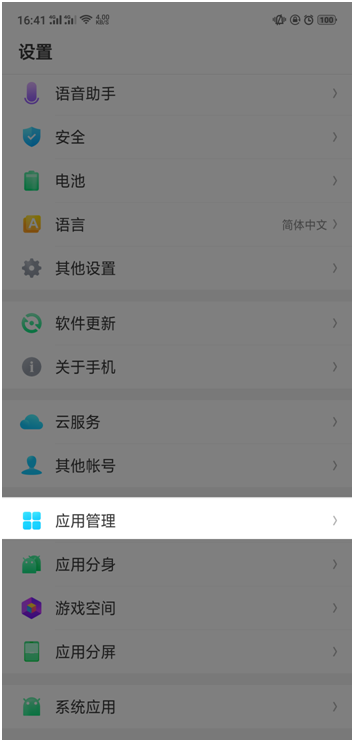
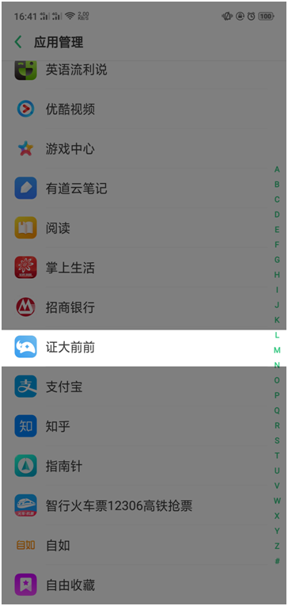
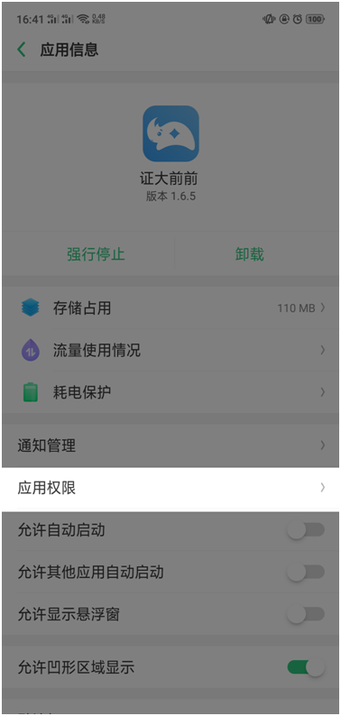
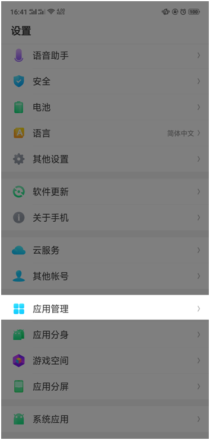
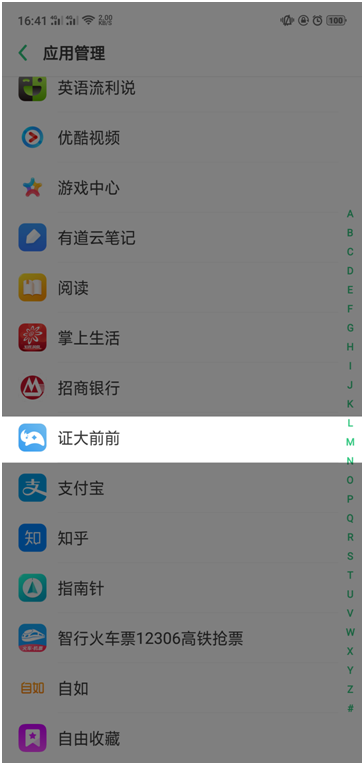
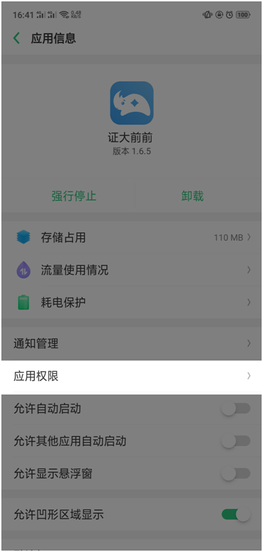

如何正确上传身份证？
您可以选择〖扫描上传〗或者〖拍照上传〗。
方式一〖扫描上传〗：分别点击扫描人像面／点击扫描国徽面，扫描时请您将您本人身份证原件对准手机中显示的扫描框，保证您的身份证在扫描框内。确保扫描后的身份证图片清晰，四角完整；
方式二〖拍照上传〗：点击“拍照上传"后，分别点击上传身份证人像面/上传身份证国徽面，进入拍照时请您将您本人身份证原件对准手机中显示的拍照区域，保证您的身份证在拍照区域内。确保拍照后的身份证图片清晰，四角完整。
您可以选择〖扫描上传〗或者〖拍照上传〗。
方式一〖扫描上传〗：分别点击扫描人像面／点击扫描国徽面，扫描时请您将您本人身份证原件对准手机中显示的扫描框，保证您的身份证在扫描框内。确保扫描后的身份证图片清晰，四角完整；
方式二〖拍照上传〗：点击“拍照上传"后，分别点击上传身份证人像面/上传身份证国徽面，进入拍照时请您将您本人身份证原件对准手机中显示的拍照区域，保证您的身份证在拍照区域内。确保拍照后的身份证图片清晰，四角完整。
身份认证时，提示“识别信息有误，请重新识别”该怎么办？
1）请扫描您的身份证原件，确保照片清晰，四角完整。放在扫描框内进行扫描；
2）建议您换个角度并在光线充足的环境多试几次，注意灯光反光，以免遮挡身份证信息部分；
3）可能是设备不适配造成的，建议更换像素较高的设备。
1）请扫描您的身份证原件，确保照片清晰，四角完整。放在扫描框内进行扫描；
2）建议您换个角度并在光线充足的环境多试几次，注意灯光反光，以免遮挡身份证信息部分；
3）可能是设备不适配造成的，建议更换像素较高的设备。
人脸识别失败，提示"验证超时"该怎么办？
1）检查网络是否连接正常，请在无线网络或4G网络下进行操作；
2）若网络连接正常，则可能由于百度接口异常导致，请退出后返回，稍后再试。
1）检查网络是否连接正常，请在无线网络或4G网络下进行操作；
2）若网络连接正常，则可能由于百度接口异常导致，请退出后返回，稍后再试。
如何打开相机授权？
请核实是否已打开相机权限，具体打开步骤如下：
iPhone：打开“设置”一“隐私"一“相机"找到证大前前 APP，点击进入，打开相机权限；
vivo：进入i管家一一软件管理一软件权限管理一一找到证大前前APP一权限一拍照，在这里面开启软件允许拍照即可；
华为：设置一权限管理一向下滑动找到〖安全防御〗栏目下的〖调用撮像头〗，找到证大前前APP，点击选择 〖允许〗字样；
小米：安全中心一一授权管理一应用权限管理，找到证大前前APP,打开相机权限；
三星：设定一应用程序一应用程序许可，找到证大前前 APP，勾选使用撮像头权限；
魅族：设置一应用管理，找到证大前前APP，点击权限管理，找到拍照和录像，打开相机权限。



请核实是否已打开相机权限，具体打开步骤如下：
iPhone：打开“设置”一“隐私"一“相机"找到证大前前 APP，点击进入，打开相机权限；
vivo：进入i管家一一软件管理一软件权限管理一一找到证大前前APP一权限一拍照，在这里面开启软件允许拍照即可；
华为：设置一权限管理一向下滑动找到〖安全防御〗栏目下的〖调用撮像头〗，找到证大前前APP，点击选择 〖允许〗字样；
小米：安全中心一一授权管理一应用权限管理，找到证大前前APP,打开相机权限；
三星：设定一应用程序一应用程序许可，找到证大前前 APP，勾选使用撮像头权限；
魅族：设置一应用管理，找到证大前前APP，点击权限管理，找到拍照和录像，打开相机权限。



是否支持使用临时身份证扫描呢？
抱歉，系统暂时不支持使用临时身份证进行申请，建议您办理本人身份证后，使用身份证原件进行申请。
抱歉，系统暂时不支持使用临时身份证进行申请，建议您办理本人身份证后，使用身份证原件进行申请。
为什么提示“身份证失效，请重新认证”？
此提示说明您的身份证有效期可能小于1个月，请您更换新的身份证之后继续申请即可。
此提示说明您的身份证有效期可能小于1个月，请您更换新的身份证之后继续申请即可。